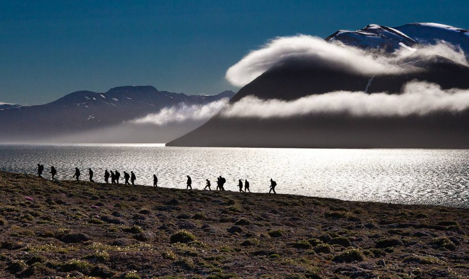
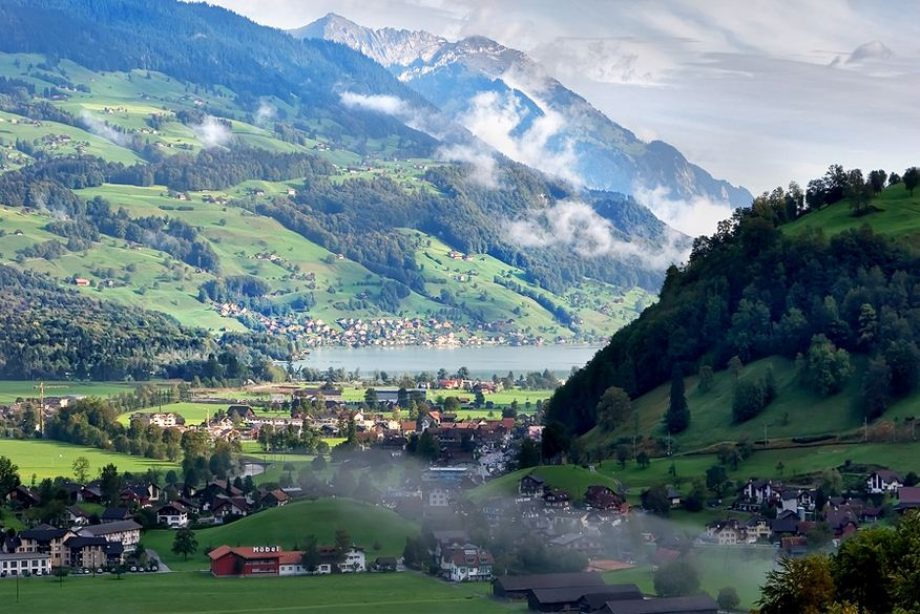
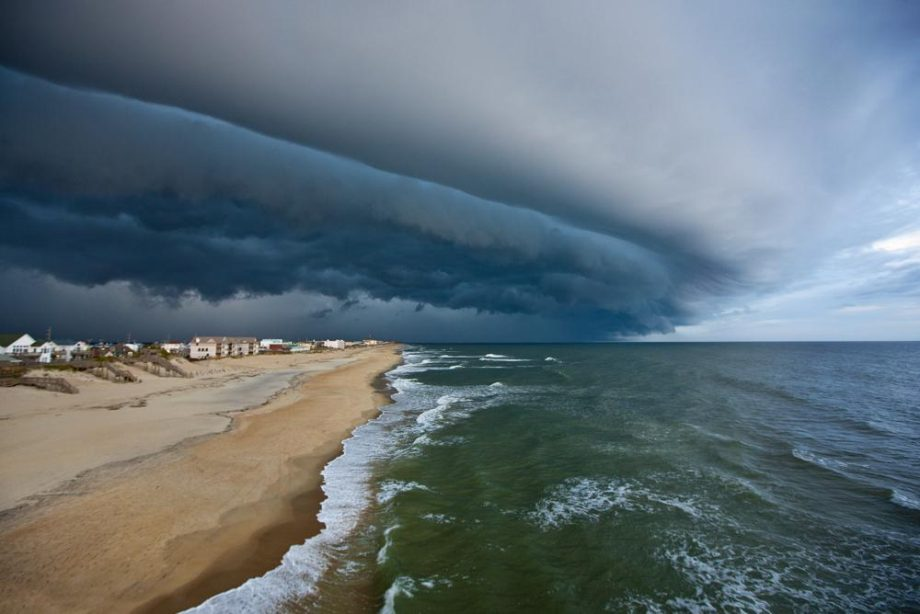
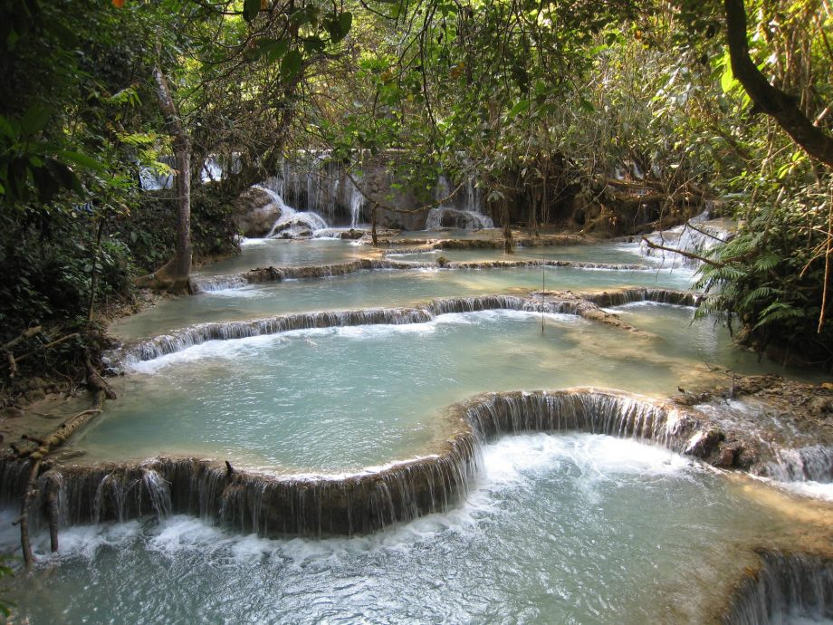

Creando mi propio camino







Perfil del Autor
Siempre he tenido el gusto por los viajes.
Pero, viajar no es solo estar en lugares diferentes, es aprender de cada uno de ellos, pues a través del tiempo cada uno cambia para adaptase al progreso y a los cambios de la naturaleza.
Así tenemos cambios en paisajes, en flora, fauna y en civilizaciones que siempre han sido un catalizador para la transformación.
He visitado diferentes lugares en diferentes partes del mundo adaptándome al presupuesto y a la accesibilidad del lugar aprendiendo que en todo el mundo hay vestigios de las transformaciones que han formado el mundo de hoy.
Aprender de diferentes culturas, diferentes pueblos y etnias nos conducirá a un mundo mejor.
Pero, viajar no es solo estar en lugares diferentes, es aprender de cada uno de ellos, pues a través del tiempo cada uno cambia para adaptase al progreso y a los cambios de la naturaleza.
Así tenemos cambios en paisajes, en flora, fauna y en civilizaciones que siempre han sido un catalizador para la transformación.
He visitado diferentes lugares en diferentes partes del mundo adaptándome al presupuesto y a la accesibilidad del lugar aprendiendo que en todo el mundo hay vestigios de las transformaciones que han formado el mundo de hoy.
Aprender de diferentes culturas, diferentes pueblos y etnias nos conducirá a un mundo mejor.